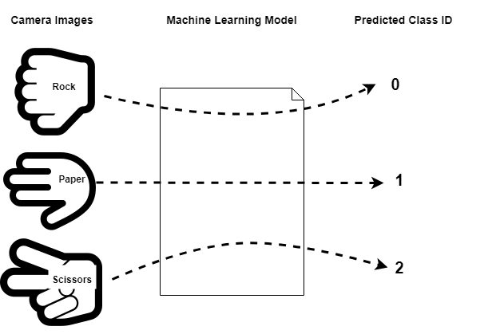

Image Classification - Rock, Paper, Scissors¶
This tutorial describes how to use the MLTK to develop a image classification machine learning model to detect the hand gestures:
Rock
Paper
Scissors
Unknown
Demo Video¶
The following is a video of the demo described in this tutorial:
Quick Links¶
GitHub Source - View this tutorial on Github
Run on Colab - Run this tutorial on Google Colab
Train in the “Cloud” - Vastly improve training times by training this model in the “cloud”
C++ Example Application - View this tutorial’s associated C++ example application
Machine Learning Model - View this tutorial’s associated machine learning model
Overview¶
Objectives¶
After completing this tutorial, you will have:
A better understanding of how image classification machine learning models work
A better understanding of how labeled datasets are created
All of the tools needed to develop your own image classification model
A working demo to detect the hand gestures: “Rock”, “Paper”, “Scissors”
Content¶
This tutorial is divided into the following sections:
Running this tutorial from a notebook¶
For documentation purposes, this tutorial was designed to run within a Jupyter Notebook. The notebook can either run locally on your PC or on a remote server like Google Colab.
Refer to the Notebook Examples Guide for more details
Click here:
 to run this tutorial interactively in your browser
to run this tutorial interactively in your browser
NOTE: Some of the following sections require this tutorial to be running locally with a supported embedded platform connected.
Running this tutorial from the command-line¶
While this tutorial uses a Jupyter Notebook, the recommended approach is to use your favorite text editor and standard command terminal, no Jupyter Notebook required.
See the Standard Python Package Installation guide for more details on how to enable the mltk command in your local terminal.
In this mode, when you encounter a !mltk command in this tutorial, the command should actually run in your local terminal (excluding the !)
Required Hardware¶
Some parts of the tutorial requires a supported development board and the ArduCAM camera module.
See the Hardware Setup section of the Image Classification C++ example application for details on how to connect the camera to the development board.
NOTE: Only the camera needs to be connected to the development board. You do not need to build the C++ application from source for this tutorial.
Install MLTK Python Package¶
Before using the MLTK, it must first be installed.
See the Installation Guide for more details.
!pip install --upgrade silabs-mltk
All MLTK modeling operations are accessible via the mltk command.
Run the command mltk --help to ensure it is working.
NOTE: The exclamation point ! tells the Notebook to run a shell command, it is not required in a standard terminal
!mltk --help
Usage: mltk [OPTIONS] COMMAND [ARGS]...
Silicon Labs Machine Learning Toolkit
This is a Python package with command-line utilities and scripts to aid the
development of machine learning models for Silicon Lab's embedded platforms.
Options:
--version Display the version of this mltk package and exit
--gpu / --no-gpu Disable usage of the GPU.
This does the same as defining the environment variable: CUDA_VISIBLE_DEVICES=-1
Example:
mltk --no-gpu train image_example1
--help Show this message and exit.
Commands:
build MLTK build commands
classify_audio Classify keywords/events detected in a microphone's...
classify_image Classify images detected by a camera connected to...
commander Silab's Commander Utility
compile Compile a model for the specified accelerator
custom Custom Model Operations
evaluate Evaluate a trained ML model
fingerprint_reader View/save fingerprints captured by the fingerprint...
profile Profile a model
quantize Quantize a model into a .tflite file
summarize Generate a summary of a model
train Train an ML model
update_params Update the parameters of a previously trained model
utest Run the all unit tests
view View an interactive graph of the given model in a...
view_audio View the spectrograms generated by the...
Classification Machine Learning Models Overview¶
Before continuing with this tutorial, it is recommended to review the MLTK Overview, which provides an overview of the core concepts used by the this tutorial.
Image classification is one of the most important applications of deep learning and Artificial Intelligence. Image classification refers to assigning labels to images based on certain characteristics or features present in them. The algorithm identifies these features and uses them to differentiate between different images and assign labels to them [1].
Class IDs¶
In this tutorial, we have a dataset with four different image types, a.k.a. classes:
rock - Images of a person’s hand making a “rock” gesture
paper - Images of a person’s hand making a “paper” gesture
scissors - Images of a persons’s hand making a “scissors” gesture
unknown - Random images not containing any of the above
We assign an ID, a.k.a. label, 0-3, to each of these classes.
We then “train” a machine learning model so that when we input an image from one of the classes is given to the model, the model’s output is the corresponding class ID. In this way, at runtime on the embedded device when the camera captures an image of a person’s hand, the ML model predicts its corresponding class ID which the firmware application uses accordingly. i.e.

Convolution Neural Networks¶
The type of machine learning model used in this tutorial is Convolution Neural Network (CNN).
A Convolutional Neural Network (ConvNet/CNN) is a Deep Learning algorithm which can take in an input image, assign importance (learnable weights and biases) to various aspects/objects in the image and be able to differentiate one from the other [2].
A typical CNN can be visualized as follows:

A typical CNN is comprised of multiple layers. A given layer is basically a mathematical operation that operates on multi-dimensional arrays (a.k.a tensors). The layers of a CNN can be split into two core phases:
Feature Learning - This uses Convolutional layers to extract “features” from the input image
Classification - This takes the flatten “feature vector” from the feature learning layers and uses “fully connected” layer(s) to make a prediction on which class the input image belongs
Creating a Labeled Dataset¶
The most important part of a machine learning model is the dataset that was used to train the model. For a machine learning model to work well in the field, it must be trained with a dataset this is representative of what would be seen in the field. Put another way, a machine learning model can only make accurate predictions on samples that are similar to what it has previously seen (i.e. trained with). As such, approximately 80% of the effort of creating a robust machine learning model is generating the dataset.
Typically, a good dataset should have the following characteristics:
Numerous samples per class - 1k+ -> ok, 10k+ -> good, 100k+ -> great
Mostly “balanced” - The sample count for each class should be mostly the same
Representative - There should be samples for all the possible orientations, lighting, backgrounds, etc. that could be seen in the field (the model can only make accurate predictions on stuff it has seen during training)
Non-redundant - Each of the samples should be relatively unique, duplicate samples usually doesn’t make the model more robust
Correctly labeled - The samples in the dataset should be correctly labeled. A few mislabled samples is typically ok, but too many can degrade the model’s accuracy
Uses same sensor as the one in the field - While not a hard requirement, it is usually best if the training dataset samples are generated using the same sensor as the one that will be used in the field. This way, the samples “look” the same during training as they do in the field
Rock, Paper, Scissors Dataset Overview¶
This tutorial uses the Rock, Paper, Scissors dataset.
You can import this dataset into a Python script using:
# Import the Rock, Paper, Scissors v2 dataset
from mltk.datasets.image import rock_paper_scissors_v2
# Then download and extract the archive
dataset_dir = rock_paper_scissors_v2.load_data()
print(f'Rock, Paper, Scissors dataset directory path: {dataset_dir}')
Extracting: C:/Users/reed/.mltk/downloads/rock_paper_scissors_v2.7z
to: C:/Users/reed/.mltk/datasets/rock_paper_scissors/v2
(This may take awhile, please be patient ...)
patool: Extracting C:/Users/reed/.mltk/downloads/rock_paper_scissors_v2.7z ...
patool: running "C:\Program Files\7-Zip\7z.EXE" x -y -oE:/reed/mltk/tmp_archives/rock_paper_scissors_v2 -- C:/Users/reed/.mltk/downloads/rock_paper_scissors_v2.7z
patool: ... C:/Users/reed/.mltk/downloads/rock_paper_scissors_v2.7z extracted to `E:/reed/mltk/tmp_archives/rock_paper_scissors_v2'.
Rock, Paper, Scissors dataset directory path: C:/Users/reed/.mltk/datasets/rock_paper_scissors/v2
This dataset has the following subdirectories:
import os
# The dataset has the following sub-directories:
for sub_dir in os.listdir(dataset_dir):
if os.path.isdir(f'{dataset_dir}/{sub_dir}'):
print(sub_dir)
paper
rock
scissor
_unknown_
Each subdirectory represents a class. So the “paper” subdirectory contains images of someone’s hand making the “paper” gesture, and similar for the other subdirectories.
Each image file (a.k.a “sample”) is a 96x96 grayscale JPEG image.
The following shows some of the samples in the dataset:
%matplotlib inline
import matplotlib.pyplot as plt
import matplotlib.image as mpimg
# Collect 5 samples file paths for each class in the dataset
class_samples = {}
for class_name in os.listdir(dataset_dir):
class_dir = f'{dataset_dir}/{class_name}'
if not os.path.isdir(class_dir):
continue
if class_name not in class_samples:
class_samples[class_name] = []
for sample_filename in os.listdir(class_dir):
if len(class_samples[class_name]) > 5:
# We only want 5 samples from each class
break
if not sample_filename.endswith('.jpg'):
continue
sample_path = f'{class_dir}/{sample_filename}'
class_samples[class_name].append(sample_path)
# Display the class samples
for class_name, sample_paths in class_samples.items():
class_dir = f'{dataset_dir}/{class_name}'
print(f'Class: {class_name}, path: {class_dir}')
_, axs = plt.subplots(1, 6, figsize=(12, 3))
axs = axs.flatten()
for sample_path, ax in zip(sample_paths, axs):
img = mpimg.imread(sample_path)
ax.imshow(img, cmap="gray")
plt.show()
Class: paper, path: C:/Users/reed/.mltk/datasets/rock_paper_scissors/v2/paper
Class: rock, path: C:/Users/reed/.mltk/datasets/rock_paper_scissors/v2/rock
Class: scissor, path: C:/Users/reed/.mltk/datasets/rock_paper_scissors/v2/scissor
Class: _unknown_, path: C:/Users/reed/.mltk/datasets/rock_paper_scissors/v2/_unknown_
Update the Dataset¶
Currently, the dataset contains less than 5k samples. This is quite small and will likely not produce a robust model. The best way to make a robust model is it add more representative samples to the dataset.
For this dataset, “representative” means:
Different people’s hands making each gesture
Different lighting angles
Different backgrounds
Different distances from the camera
Use of “left” and “right” hand
Showing front and back of hand
So basically, to improve the model we need to increase the size of the dataset by having different people record their hands performing “rock”, “paper”, “scissors” from different orientations. The more images we add, the more “representative” the dataset becomes, which should (hopefully) make the model more robust.
Fortunately, the MLTK features a command that allows for recording images from the embedded device.
!mltk classify_image --help
Usage: mltk classify_image [OPTIONS] <model>
Classify images detected by a camera connected to an embedded device.
NOTE: A supported embedded device must be locally connected to use this
command.
Arguments:
<model> On of the following:
- MLTK model name
- Path to .tflite file
- Path to model archive file (.mltk.zip)
NOTE: The model must have been previously trained for image classification [required]
Options:
-a, --accelerator <name> Name of accelerator to use while executing the audio classification ML model
--port <port> Serial COM port of a locally connected embedded device.
'If omitted, then attempt to automatically determine the serial COM port
-v, --verbose Enable verbose console logs
-w, --window_duration <duration ms>
Controls the smoothing. Drop all inference results that are older than <now> minus window_duration.
Longer durations (in milliseconds) will give a higher confidence that the results are correct, but may miss some images
-c, --count <count> The *minimum* number of inference results to
average when calculating the detection value
-t, --threshold <threshold> Minimum averaged model output threshold for
a class to be considered detected, 0-255.
Higher values increase precision at the cost
of recall
-s, --suppression <count> Number of samples that should be different
than the last detected sample before
detecting again
-l, --latency <latency ms> This the amount of time in milliseconds
between processing loops
-i, --sensitivity FLOAT Sensitivity of the activity indicator LED.
Much less than 1.0 has higher sensitivity
-x, --dump-images Dump the raw images from the device camera to a directory on the local PC.
NOTE: Use the --no-inference option to ONLY dump images and NOT run inference on the device
Use the --dump-threshold option to control how unique the images must be to dump
--dump-threshold FLOAT This controls how unique the camera images must be before they're dumped.
This is useful when generating a dataset.
If this value is set to 0 then every image from the camera is dumped.
if this value is closer to 1. then the images from the camera should be sufficiently unique from
prior images that have been dumped. [default: 0.1]
--no-inference By default inference is executed on the
device. Use --no-inference to disable
inference on the device which can improve
image dumping throughput
-g, --generate-dataset Update the model's dataset.
This will iterate through each data class used by the model and instruct the user
the display the class in front of the camera. An image is captured from the device's camera
and saved to the model's corresponding dataset sub-directory.
This process will repeat until the user exits the command.
Use the --sample-count option to specify the number of samples per class to collect
NOTE: Device inference is disabled when using this option
See the --dump-images option as an alternative to generating a dataset
--sample-count INTEGER The number of samples to collect per class
before iterating to the next class
[default: 5]
--app <path> By default, the image_classifier app is automatically downloaded.
This option allows for overriding with a custom built app.
Alternatively, set this option to "none" to NOT program the image_classifier app to the device.
In this case, ONLY the .tflite will be programmed and the existing image_classifier app will be re-used.
--test Run as a unit test
--help Show this message and exit.
Using the command:
mltk rock_paper_scissors --dump-images --dump-threshold 0.01
Images from the embedded device will be saved to the local PC. The images can then by copied into the “Rock, Paper, Scissors” dataset directory.
Update Sequence¶
The process for updating (i.e. adding more samples to) the “Rock, Paper, Scissors” dataset is as follows:
NOTE: A similar process can be used for other image based datasets
Purchase an ArduCAM camera module
Connect the ArduCAM to a supported development board as described in the image_classifier example application
Issue the command:
mltk rock_paper_scissors --dump-images --dump-threshold 0.01Open the dump directory that is printed in the terminal (which should be something like
~/.mltk/image_classifier_images/brd2601), you should see images being dumped to this directory.
Ensure the background is a solid color (A much larger dataset is required to use random backgrounds)Make the “rock” gesture in front of the camera, and move your hand is various orientations and distances from the camera
Repeat step 4 showing the other side of your hand making the “rock” gesture
(if possible, also change the lighting conditions to collect even more samples)Once enough images have been dumped (~100-200), review the images in the dump directory.
Delete all images that do not clearly show your hand making the “rock” gestureOnce the dump directory only contains images of your hand making the “rock” gesture, copy all of the images to the dataset directory:
~/.mltk/datasets/rock_paper_scissors/v2/rockRepeat steps 5-8 using the “paper” gesture and then the “scissors” gesture
Once this process is complete, the model should be retrained.e.g.: mltk train rock_paper_scissors --clean which will use the updated dataset.
Creating the Model Specification¶
The model specification is a standard Python script containing everything needed to build, train, and evaluate a machine learning model in the MLTK.
Refer to the Model Specification Guide for more details about this file.
The completed model specification used for this tutorial may be found on Github: rock_paper_scissors.py.
The following sub-sections describe how to create this model specification from scratch.
Create the specification script¶
From your favorite text editor, create a model specification Python script file, e.g:
my_rock_paper_scissors.py
The name of this file is the name given to the model. So all subsequent mltk commands will use the model name my_rock_paper_scissors, e.g:
mltk train my_rock_paper_scissors
You may use any name as long as it contains alphanumeric or underscore characters.
When executing a command, the MLTK searches for the model specification script by model name.
The MLTK commands search the current working directory then any configured paths.
Refer to the Model Search Path Guide for more details.
NOTE: The commands below use the pre-defined model name: rock_paper_scissors, however, you should replace that with your model’s name, e.g.: my_rock_paper_scissors.
Add necessary imports¶
Next, open the newly created Python script: my_rock_paper_scissors.py
in your favorite text editor and add the following to the top of the model specification script:
# Bring in the required Keras classes
from tensorflow.keras.models import Sequential
from tensorflow.keras.layers import Dense, Activation, Flatten, Dropout, BatchNormalization
from tensorflow.keras.layers import Conv2D, MaxPooling2D
from mltk.core.model import (
MltkModel,
TrainMixin,
ImageDatasetMixin,
EvaluateClassifierMixin
)
# By default, we use the ParallelImageDataGenerator
# We could use the Keras ImageDataGenerator but it is slower
from mltk.core.preprocess.image.parallel_generator import ParallelImageDataGenerator
#from keras.preprocessing.image import ImageDataGenerator
# Import the dataset
from mltk.datasets.image import rock_paper_scissors_v2
These import various Tensorflow and MLTK packages we’ll use throughout the script.
Refer to the comments above each import for more details.
Define Model Object¶
Next, add the following to the model specification script:
# Instantiate the MltkModel object with the following 'mixins':
# - TrainMixin - Provides classifier model training operations and settings
# - ImageDatasetMixin - Provides image data generation operations and settings
# - EvaluateClassifierMixin - Provides classifier evaluation operations and settings
# @mltk_model # NOTE: This tag is required for this model be discoverable
class MyModel(
MltkModel,
TrainMixin,
ImageDatasetMixin,
EvaluateClassifierMixin
):
pass
my_model = MyModel()
This defines and instantiates a custom MltkModel object with several model “mixins”.
The custom model object must inherit the MltkModel object.
Additionally, it inherits:
TrainMixin so that we can train the model
ImageDatasetMixin so that we can train the model with the ParallelImageDataGenerator
EvaluateClassifierMixin so that we can evaluate the trained model
The rest of the model specification script configures the various properties of our custom model object.
Configure the general model settings¶
# For better tracking, the version should be incremented any time a non-trivial change is made
# NOTE: The version is optional and not used directly used by the MLTK
my_model.version = 1
# Provide a brief description about what this model models
# This description goes in the "description" field of the .tflite model file
my_model.description = 'Image classifier example for detecting Rock/Paper/Scissors hand gestures in images'
Configure the basic training settings¶
Refer to the TrainMixin for more details about each property.
# This specifies the number of times we run the training
# samples through the model to update the model weights.
# Typically, a larger value leads to better accuracy at the expense of training time.
# Set to -1 to use the early_stopping callback and let the scripts
# determine how many epochs to train for (see below).
# Otherwise set this to a specific value (typically 40-200)
my_model.epochs = 125
# Specify how many samples to pass through the model
# before updating the training gradients.
# Typical values are 10-64
# NOTE: Larger values require more memory and may not fit on your GPU
my_model.batch_size = 32
# This specifies the algorithm used to update the model gradients
# during training. Adam is very common
# See https://www.tensorflow.org/api_docs/python/tf/keras/optimizers
my_model.optimizer = 'adam'
# List of metrics to be evaluated by the model during training and testing
my_model.metrics = ['accuracy']
# The "loss" function used to update the weights
# This is a classification problem with more than two labels so we use categorical_crossentropy
# See https://www.tensorflow.org/api_docs/python/tf/keras/losses
my_model.loss = 'categorical_crossentropy'
Configure the training callbacks¶
Refer to the TrainMixin for more details about each property.
# Generate checkpoints every time the validation accuracy improves
# See https://www.tensorflow.org/api_docs/python/tf/keras/callbacks/ModelCheckpoint
my_model.checkpoint['monitor'] = 'val_accuracy'
# https://keras.io/api/callbacks/reduce_lr_on_plateau/
# If the test loss doesn't improve after 'patience' epochs
# then decrease the learning rate by 'factor'
my_model.reduce_lr_on_plateau = dict(
monitor='loss',
factor = 0.95,
min_delta=0.001,
patience = 1
)
# If the accuracy doesn't improve after 35 epochs then stop training
# https://keras.io/api/callbacks/early_stopping/
my_model.early_stopping = dict(
monitor = 'accuracy',
patience = 25,
verbose=1
)
Configure the TF-Lite Converter settings¶
The Tensorflow-Lite Converter is used to “quantize” the model.
The quantized model is what is eventually programmed to the embedded device.
Refer to the Model Quantization Guide for more details.
my_model.tflite_converter['optimizations'] = ['DEFAULT']
# Tell the TfliteConverter to generated int8 weights/filters
my_model.tflite_converter['supported_ops'] = ['TFLITE_BUILTINS_INT8']
# We want the input/output model data types to be float32
# since we're using samplewise_std_normalization=True during training
# With this, the TfliteConverter will automatically add quantize/dequantize
# layers to the model to automatically convert the float32 data to int8
my_model.tflite_converter['inference_input_type'] = 'float32'
my_model.tflite_converter['inference_output_type'] = 'float32'
# Generate a representative dataset from the validation data
my_model.tflite_converter['representative_dataset'] = 'generate'
Configure the dataset settings¶
Next, we specify the dataset. In this tutorial we use the Rock Paper Scissors v2 dataset which comes as an MLTK package.
NOTE: While the MLTK comes with pre-defined datasets, any external dataset may also be specified.
Refer to the ImageDatasetMixin.dataset property for more details.
NOTE: While a dataset path can be hard coded, it is strongly recommended that the script dynamically downloads the dataset from the internet. This allows for the model training and evaluating to be reproducible. It also enables remote training on cloud services like Google Colab which need to download the dataset any time a virtual instance is created.
# The directory of the training data
# NOTE: This can also be a directory path or a callback function
my_model.dataset = rock_paper_scissors_v2
# The classification type
my_model.class_mode = 'categorical'
# The class labels found in your training dataset directory
my_model.classes = rock_paper_scissors_v2.CLASSES
# The input shape to the model. The dataset samples will be resized if necessary
my_model.input_shape = (84,84,1)
# Shuffle the dataset directory once
my_model.shuffle_dataset_enabled = True
# The numbers of samples for each class is different
# Then ensures each class contributes equally to training the model
my_model.class_weights = 'balanced'
Configure the data augmentation settings¶
Next, we configure how we want to augment the dataset during training.
See the ParallelImageDataGenerator API doc for more details.
With these settings, random augmentations are done to the training subset samples during training. This effectively increases the size of the dataset.
my_model.datagen = ParallelImageDataGenerator(
cores=0.65,
debug=False,
max_batches_pending=32,
validation_split= 0.15,
validation_augmentation_enabled=False,
rotation_range=15,
width_shift_range=5,
height_shift_range=5,
brightness_range=(0.80, 1.10),
contrast_range=(0.80, 1.10),
noise=['gauss', 'poisson', 's&p'],
zoom_range=(0.95, 1.05),
rescale=None,
horizontal_flip=True,
vertical_flip=True,
samplewise_center=True, # These settings require the model input to be float32
# NOTE: With these settings, the embedded device must also convert the images at runtime
samplewise_std_normalization=True,
)
Data preprocessing¶
The ParallelImageDataGenerator also features some data preprocessing settings:
samplewise_center=True
samplewise_std_normalization=True
This normalizes the input images using:
norm_img = (img - mean(img)) / std(img)
This helps to ensure the model is not as dependent on camera and lighting variations.
Alternatively, you could use:
rescale=1/255.
To scale each pixel between 0-1. This helps the model converge faster during training.
Either way, any preprocessing that is done during training must also be done at runtime on the embedded device.
The image_classifier example application demonstrates how to do these image preprocessing algorithms.
Define the model layout¶
This defines the actual structure of the model that runs on the embedded device using the Keras API. The details of how to create the model structure are out-of-scope for this tutorial.
The model used by this tutorial was taken from: Building powerful image classification models using very little data
# Build the ML Model
# This model was adapted from:
# https://blog.keras.io/building-powerful-image-classification-models-using-very-little-data.html
#
# This defines the actual model layout using the Keras API.
# This particular model is a relatively standard
# sequential Convolution Neural Network (CNN).
#
# It is important to the note the usage of the
# "model" argument.
# Rather than hardcode values, the model is
# used to build the model, e.g.:
# Dense(model.n_classes)
#
# This way, the various model properties above can be modified
# without having to re-write this section.
def my_model_builder(model: MyModel):
keras_model = Sequential()
# Increasing this value can increase model accuracy
# at the expense of more RAM and execution latency
filter_count = 16
# "Feature Learning" layers
keras_model.add(Conv2D(filter_count, (3, 3), input_shape=model.input_shape))
keras_model.add(Activation('relu'))
keras_model.add(MaxPooling2D(pool_size=(2, 2)))
keras_model.add(Conv2D(filter_count, (3, 3)))
keras_model.add(Activation('relu'))
keras_model.add(MaxPooling2D(pool_size=(2, 2)))
keras_model.add(Conv2D(filter_count*2, (3, 3)))
keras_model.add(Activation('relu'))
keras_model.add(MaxPooling2D(pool_size=(2, 2)))
# "Classification" layers
keras_model.add(Flatten()) # this converts our 3D feature maps to 1D feature vectors
keras_model.add(Dense(filter_count*2)) # This should be the same size at the previous Conv2D layer count
keras_model.add(Activation('relu'))
keras_model.add(Dropout(0.5))
keras_model.add(Dense(model.n_classes, activation='softmax'))
keras_model.compile(
loss=model.loss,
optimizer=model.optimizer,
metrics=model.metrics
)
return keras_model
At this point, the model specification script should have everything needed to train, evaluate, and generate model file that can run on an embedded device.
The following sections describe how to use the MLTK to perform these tasks.
Model Parameters¶
It is extremely important that whatever transforms are done to the dataset during training are also done at run-time on the embedded device.
To help with this, the MLTK allows for embedding parameters into the generated .tflite model file.
Refer to the Model Parameters Guide for more details about how this works.
This is useful for this tutorial as the MLTK will automatically embed ImageDatasetMixin parameters into the generated .tflite model file.
Later, the Gecko SDK will read the settings from the .tflite model file when generating the project.
NOTE: The mltk summarize --tflite command prints all the parameters that are embedded into the .tflite model file.
Model Summary¶
With the model specification complete, it is sometimes useful to generate a summary of the model before we spend the time to train it.
This can be done using the summarize command.
If you’re using a local terminal, navigate to the same directory are your model specification script, e.g. my_rock_paper_scissors.py and modify the commands to use my_rock_paper_scissors or whatever you called your model.
NOTE: Since we have not trained our model yet, we must add the --build option to the command.
Once the model is trained, this option is not required.
# Summarize the Keras Model
# This is the non-quantized model used for training
# NOTE: Running this the first time may take awhile since the dataset needs to be downloaded
!mltk summarize rock_paper_scissors --build
File C:/Users/reed/.mltk/datasets/rock_paper_scissors/v2/scissor/2022-04-29T23-01-25.981.jpg not found in existing index, re-generating index
File C:/Users/reed/.mltk/datasets/rock_paper_scissors/v2/rock/2022-04-29T23-13-28.550.jpg not found in existing index, re-generating index
File C:/Users/reed/.mltk/datasets/rock_paper_scissors/v2/_unknown_/2022-05-02T17-55-00.359.jpg not found in existing index, re-generating index
File C:/Users/reed/.mltk/datasets/rock_paper_scissors/v2/paper/2022-04-29T23-06-01.204.jpg not found in existing index, re-generating index
Model: "sequential"
_________________________________________________________________
Layer (type) Output Shape Param #
=================================================================
conv2d (Conv2D) (None, 82, 82, 16) 160
activation (Activation) (None, 82, 82, 16) 0
max_pooling2d (MaxPooling2D (None, 41, 41, 16) 0
)
conv2d_1 (Conv2D) (None, 39, 39, 16) 2320
activation_1 (Activation) (None, 39, 39, 16) 0
max_pooling2d_1 (MaxPooling (None, 19, 19, 16) 0
2D)
conv2d_2 (Conv2D) (None, 17, 17, 32) 4640
activation_2 (Activation) (None, 17, 17, 32) 0
max_pooling2d_2 (MaxPooling (None, 8, 8, 32) 0
2D)
flatten (Flatten) (None, 2048) 0
dense (Dense) (None, 32) 65568
activation_3 (Activation) (None, 32) 0
dropout (Dropout) (None, 32) 0
dense_1 (Dense) (None, 4) 132
=================================================================
Total params: 72,820
Trainable params: 72,820
Non-trainable params: 0
_________________________________________________________________
Total MACs: 5.870 M
Total OPs: 12.303 M
Name: rock_paper_scissors
Version: 1
Description: Image classifier example for detecting Rock/Paper/Scissors hand gestures in images
Classes: rock, paper, scissor, _unknown_
hash:
date:
runtime_memory_size: 0
detection_threshold: 175
average_window_duration_ms: 500
minimum_count: 2
suppression_count: 1
# Summarize the TF-Lite Model
# This is the quantized model that eventually goes on the embedded device
!mltk summarize rock_paper_scissors --tflite --build
File C:/Users/reed/.mltk/datasets/rock_paper_scissors/v2/scissor/2022-04-29T23-01-25.981.jpg not found in existing index, re-generating index
File C:/Users/reed/.mltk/datasets/rock_paper_scissors/v2/rock/2022-04-29T23-13-28.550.jpg not found in existing index, re-generating index
File C:/Users/reed/.mltk/datasets/rock_paper_scissors/v2/paper/2022-04-29T23-05-47.387.jpg not found in existing index, re-generating index
File C:/Users/reed/.mltk/datasets/rock_paper_scissors/v2/_unknown_/2022-04-29T22-04-13.350.jpg not found in existing index, re-generating index
C:\Users\reed\workspace\silabs\mltk\.venv\lib\site-packages\tensorflow\lite\python\convert.py:746: UserWarning: Statistics for quantized inputs were expected, but not specified; continuing anyway.
warnings.warn("Statistics for quantized inputs were expected, but not "
+-------+-----------------+-------------------+-----------------+-----------------------------------------------------+
| Index | OpCode | Input(s) | Output(s) | Config |
+-------+-----------------+-------------------+-----------------+-----------------------------------------------------+
| 0 | quantize | 84x84x1 (float32) | 84x84x1 (int8) | BuiltinOptionsType=0 |
| 1 | conv_2d | 84x84x1 (int8) | 82x82x16 (int8) | Padding:valid stride:1x1 activation:relu |
| | | 3x3x1 (int8) | | |
| | | 16 (int32) | | |
| 2 | max_pool_2d | 82x82x16 (int8) | 41x41x16 (int8) | Padding:valid stride:2x2 filter:2x2 activation:none |
| 3 | conv_2d | 41x41x16 (int8) | 39x39x16 (int8) | Padding:valid stride:1x1 activation:relu |
| | | 3x3x16 (int8) | | |
| | | 16 (int32) | | |
| 4 | max_pool_2d | 39x39x16 (int8) | 19x19x16 (int8) | Padding:valid stride:2x2 filter:2x2 activation:none |
| 5 | conv_2d | 19x19x16 (int8) | 17x17x32 (int8) | Padding:valid stride:1x1 activation:relu |
| | | 3x3x16 (int8) | | |
| | | 32 (int32) | | |
| 6 | max_pool_2d | 17x17x32 (int8) | 8x8x32 (int8) | Padding:valid stride:2x2 filter:2x2 activation:none |
| 7 | reshape | 8x8x32 (int8) | 2048 (int8) | BuiltinOptionsType=0 |
| | | 2 (int32) | | |
| 8 | fully_connected | 2048 (int8) | 32 (int8) | Activation:relu |
| | | 2048 (int8) | | |
| | | 32 (int32) | | |
| 9 | fully_connected | 32 (int8) | 4 (int8) | Activation:none |
| | | 32 (int8) | | |
| | | 4 (int32) | | |
| 10 | softmax | 4 (int8) | 4 (int8) | BuiltinOptionsType=9 |
| 11 | dequantize | 4 (int8) | 4 (float32) | BuiltinOptionsType=0 |
+-------+-----------------+-------------------+-----------------+-----------------------------------------------------+
Total MACs: 5.870 M
Total OPs: 12.050 M
Name: rock_paper_scissors
Version: 1
Description: Image classifier example for detecting Rock/Paper/Scissors hand gestures in images
Classes: rock, paper, scissor, _unknown_
hash: 2482ff1c6e512f70479605f20e18e5fc
date: 2022-05-03T23:33:50.754Z
runtime_memory_size: 137176
detection_threshold: 175
average_window_duration_ms: 500
minimum_count: 2
suppression_count: 1
samplewise_norm.rescale: 0.0
samplewise_norm.mean_and_std: True
.tflite file size: 80.2kB
Model Visualization¶
The MLTK also allows for visualizing the model in an interactive webpage.
This is done using the view command.
Refer to the Model Visualization Guide for more details on how this works.
NOTES:
This will open a new tab to your web-browser
You must click the opened webpage’s ‘Accept’ button the first time it runs (and possibly re-run the command)
Since we have not trained our model yet, we must add the
--buildoption to the command. This is not required once the model is trained.This command must run locally, it will not work from a remote terminal/notebook
Visualize Keras model¶
By default, the view command will visualize the KerasModel, the model used for training (file extension .h5).
# This will open a new tab in your web browser
# Be sure the click the 'Accept' button in the opened webpage
# (you may need to re-run this command after doing so)
!mltk view rock_paper_scissors --build
Visualize TF-Lite model¶
Alternatively, the --tflite flag can be used to view the TfliteModel, the quantized model that is programmed to the embedded device (file extension .tflite).
Note that the structure of the Keras and TfLite models are similar, but the TfLite model is a bit more simple. This is because the TF-Lite Converter optimized the model by merging/fusing as many layers as possible.
# This will open a new tab in your web browser
# Be sure the click the 'Accept' button in the opened webpage
# (you may need to re-run this command after doing so)
!mltk view rock_paper_scissors --tflite --build
Model Profiler¶
Before spending the time and energy to train the model, it may be useful to profile the model to determine how efficiently it may run on the embedded device. If it’s determined that the model does not fit within the time or memory constraints, then the model layout should be adjusted, the model input size should be reduced, and/or a different model should be selected.
For this reason, th MLTK features a model profiler. Refer to the Model Profiler Guide for more details.
NOTE: The following examples use the --build flag since the model has not been trained yet. Once the model is trained this flag is no longer needed.
Profile in simulator¶
The following command will profile our model in the MVP hardware simulator and return estimates about the time and energy the model might require on the embedded device.
NOTES:
An embedded device does not needed to be locally connected to run this command.
Remove the
--accelerator MVPoption if you are targeting a device that does not have an MVP hardware accelerator.
!mltk profile rock_paper_scissors --build --accelerator MVP
File C:/Users/reed/.mltk/datasets/rock_paper_scissors/v2/scissor/2022-04-29T23-01-25.981.jpg not found in existing index, re-generating index
File C:/Users/reed/.mltk/datasets/rock_paper_scissors/v2/rock/2022-04-29T23-13-28.550.jpg not found in existing index, re-generating index
File C:/Users/reed/.mltk/datasets/rock_paper_scissors/v2/paper/2022-04-29T23-05-47.387.jpg not found in existing index, re-generating index
File C:/Users/reed/.mltk/datasets/rock_paper_scissors/v2/_unknown_/2022-04-29T22-04-13.350.jpg not found in existing index, re-generating index
C:\Users\reed\workspace\silabs\mltk\.venv\lib\site-packages\tensorflow\lite\python\convert.py:746: UserWarning: Statistics for quantized inputs were expected, but not specified; continuing anyway.
warnings.warn("Statistics for quantized inputs were expected, but not "
Profiling Summary
Name: rock_paper_scissors
Accelerator: MVP
Input Shape: 1x84x84x1
Input Data Type: float32
Output Shape: 1x4
Output Data Type: float32
Flash, Model File Size (bytes): 80.2k
RAM, Runtime Memory Size (bytes): 137.2k
Operation Count: 12.3M
Multiply-Accumulate Count: 5.9M
Layer Count: 12
Unsupported Layer Count: 0
Accelerator Cycle Count: 11.0M
CPU Cycle Count: 345.4k
CPU Utilization (%): 3.1
Clock Rate (hz): 80.0M
Time (s): 141.5m
Energy (J): 1.5m
J/Op: 122.3p
J/MAC: 256.8p
Ops/s: 87.2M
MACs/s: 41.5M
Inference/s: 7.1
Model Layers
+-------+-----------------+--------+--------+------------+------------+------------+----------+-------------------------+--------------+-----------------------------------------------------+
| Index | OpCode | # Ops | # MACs | Acc Cycles | CPU Cycles | Energy (J) | Time (s) | Input Shape | Output Shape | Options |
+-------+-----------------+--------+--------+------------+------------+------------+----------+-------------------------+--------------+-----------------------------------------------------+
| 0 | quantize | 28.2k | 0 | 0 | 254.7k | 41.3u | 3.2m | 1x84x84x1 | 1x84x84x1 | BuiltinOptionsType=0 |
| 1 | conv_2d | 2.3M | 968.3k | 3.4M | 7.4k | 478.0u | 43.0m | 1x84x84x1,16x3x3x1,16 | 1x82x82x16 | Padding:valid stride:1x1 activation:relu |
| 2 | max_pool_2d | 107.6k | 0 | 80.7k | 16.2k | 9.2u | 1.0m | 1x82x82x16 | 1x41x41x16 | Padding:valid stride:2x2 filter:2x2 activation:none |
| 3 | conv_2d | 7.1M | 3.5M | 5.4M | 7.3k | 745.6u | 66.9m | 1x41x41x16,16x3x3x16,16 | 1x39x39x16 | Padding:valid stride:1x1 activation:relu |
| 4 | max_pool_2d | 23.1k | 0 | 17.3k | 16.2k | 4.0u | 216.6u | 1x39x39x16 | 1x19x19x16 | Padding:valid stride:2x2 filter:2x2 activation:none |
| 5 | conv_2d | 2.7M | 1.3M | 2.0M | 7.2k | 226.1u | 25.4m | 1x19x19x16,32x3x3x16,32 | 1x17x17x32 | Padding:valid stride:1x1 activation:relu |
| 6 | max_pool_2d | 8.2k | 0 | 6.1k | 27.3k | 1.7u | 341.3u | 1x17x17x32 | 1x8x8x32 | Padding:valid stride:2x2 filter:2x2 activation:none |
| 7 | reshape | 0 | 0 | 0 | 217.3 | 0.0p | 2.7u | 1x8x8x32,2 | 1x2048 | BuiltinOptionsType=0 |
| 8 | fully_connected | 131.2k | 65.5k | 98.4k | 1.6k | 1.6u | 1.2m | 1x2048,32x2048,32 | 1x32 | Activation:relu |
| 9 | fully_connected | 260.0 | 128.0 | 208.0 | 1.7k | 7.7n | 21.7u | 1x32,4x32,4 | 1x4 | Activation:none |
| 10 | softmax | 20.0 | 0 | 0 | 4.1k | 16.5n | 51.8u | 1x4 | 1x4 | BuiltinOptionsType=9 |
| 11 | dequantize | 8.0 | 0 | 0 | 1.4k | 159.1n | 17.5u | 1x4 | 1x4 | BuiltinOptionsType=0 |
+-------+-----------------+--------+--------+------------+------------+------------+----------+-------------------------+--------------+-----------------------------------------------------+
Generating profiling report at C:/Users/reed/.mltk/models/rock_paper_scissors-test/profiling
Profiling time: 16.559938 seconds
Profile on physical device¶
Alternatively, if we have a device locally connected, we can directly profile on that instead. This is useful as the returned profiling numbers are “real”, they are not estimated as they would be in the simulator case.
To profile on a physical device, simply added the --device command flag.
NOTES:
An embedded device must be locally connected to run this command.
Remove the
--accelerator MVPoption if you are targeting a device that does not have an MVP hardware accelerator.
!mltk profile rock_paper_scissors --build --device --accelerator MVP
File C:/Users/reed/.mltk/datasets/rock_paper_scissors/v2/scissor/2022-04-29T23-01-25.981.jpg not found in existing index, re-generating index
File C:/Users/reed/.mltk/datasets/rock_paper_scissors/v2/rock/2022-04-29T23-13-28.550.jpg not found in existing index, re-generating index
File C:/Users/reed/.mltk/datasets/rock_paper_scissors/v2/paper/2022-04-29T23-05-47.387.jpg not found in existing index, re-generating index
File C:/Users/reed/.mltk/datasets/rock_paper_scissors/v2/_unknown_/2022-04-29T22-04-13.350.jpg not found in existing index, re-generating index
C:\Users\reed\workspace\silabs\mltk\.venv\lib\site-packages\tensorflow\lite\python\convert.py:746: UserWarning: Statistics for quantized inputs were expected, but not specified; continuing anyway.
warnings.warn("Statistics for quantized inputs were expected, but not "
Profiling Summary
Name: rock_paper_scissors
Accelerator: MVP
Input Shape: 1x84x84x1
Input Data Type: float32
Output Shape: 1x4
Output Data Type: float32
Flash, Model File Size (bytes): 80.2k
RAM, Runtime Memory Size (bytes): 137.1k
Operation Count: 12.3M
Multiply-Accumulate Count: 5.9M
Layer Count: 12
Unsupported Layer Count: 0
Accelerator Cycle Count: 11.3M
CPU Cycle Count: 358.9k
CPU Utilization (%): 3.1
Clock Rate (hz): 80.0M
Time (s): 142.7m
Ops/s: 86.4M
MACs/s: 41.1M
Inference/s: 7.0
Model Layers
+-------+-----------------+--------+--------+------------+------------+----------+-------------------------+--------------+-----------------------------------------------------+
| Index | OpCode | # Ops | # MACs | Acc Cycles | CPU Cycles | Time (s) | Input Shape | Output Shape | Options |
+-------+-----------------+--------+--------+------------+------------+----------+-------------------------+--------------+-----------------------------------------------------+
| 0 | quantize | 28.2k | 0 | 0 | 254.8k | 3.1m | 1x84x84x1 | 1x84x84x1 | BuiltinOptionsType=0 |
| 1 | conv_2d | 2.2M | 968.2k | 3.6M | 9.3k | 44.9m | 1x84x84x1,16x3x3x1,16 | 1x82x82x16 | Padding:valid stride:1x1 activation:relu |
| 2 | max_pool_2d | 107.6k | 0 | 80.8k | 15.0k | 1.1m | 1x82x82x16 | 1x41x41x16 | Padding:valid stride:2x2 filter:2x2 activation:none |
| 3 | conv_2d | 7.1M | 3.5M | 5.4M | 8.5k | 66.2m | 1x41x41x16,16x3x3x16,16 | 1x39x39x16 | Padding:valid stride:1x1 activation:relu |
| 4 | max_pool_2d | 23.1k | 0 | 17.4k | 14.9k | 300.0u | 1x39x39x16 | 1x19x19x16 | Padding:valid stride:2x2 filter:2x2 activation:none |
| 5 | conv_2d | 2.7M | 1.3M | 2.0M | 8.5k | 25.2m | 1x19x19x16,32x3x3x16,32 | 1x17x17x32 | Padding:valid stride:1x1 activation:relu |
| 6 | max_pool_2d | 8.2k | 0 | 6.4k | 28.1k | 330.0u | 1x17x17x32 | 1x8x8x32 | Padding:valid stride:2x2 filter:2x2 activation:none |
| 7 | reshape | 0 | 0 | 0 | 10.7k | 150.0u | 1x8x8x32,2 | 1x2048 | BuiltinOptionsType=0 |
| 8 | fully_connected | 131.2k | 65.5k | 98.5k | 2.1k | 1.2m | 1x2048,32x2048,32 | 1x32 | Activation:relu |
| 9 | fully_connected | 260.0 | 128.0 | 231.0 | 1.8k | 30.0u | 1x32,4x32,4 | 1x4 | Activation:none |
| 10 | softmax | 20.0 | 0 | 0 | 4.1k | 60.0u | 1x4 | 1x4 | BuiltinOptionsType=9 |
| 11 | dequantize | 8.0 | 0 | 0 | 1.1k | 0 | 1x4 | 1x4 | BuiltinOptionsType=0 |
+-------+-----------------+--------+--------+------------+------------+----------+-------------------------+--------------+-----------------------------------------------------+
Generating profiling report at C:/Users/reed/.mltk/models/rock_paper_scissors-test/profiling
Profiling time: 49.481894 seconds
Note about CPU utilization¶
An important metric the model profiler provides when using the MVP hardware accelerator is CPU Utilization.
This gives an indication of how much CPU is required to run the machine learning model.
If no hardware accelerator is used, then the CPU utilization is 100% as 100% of the machine learning model’s calculations are executed on the CPU. With the hardware accelerator, many of the model’s calculations can be offloaded to the accelerator freeing the CPU to do other tasks.
The additional CPU cycles the hardware accelerator provides can be a major benefit, especially when other tasks such as real-time audio processing are required.
Note about model size and hardware constraints¶
The model used in this tutorial has already been optimized for the embedded device.
The original model definition used 32 Conv2D filters in the first layer and the input images were 96x96.
If you revert your model specification to these parameters, e.g.:
my_model.input_shape = (96,96,1)
def my_model_builder(model: MyModel):
keras_model = Sequential()
# Increasing this value can increase model accuracy
# at the expense of more RAM and execution latency
filter_count = 32
Then profile the model:
mltk profile rock_paper_scissors --accelerator MVP --build
You’ll find that the model exceeds the available RAM.
Using the tips in the FAQ question How can I reduce my model’s size, the model parameters were reduced to:
my_model.input_shape = (84,84,1)
def my_model_builder(model: MyModel):
keras_model = Sequential()
# Increasing this value can increase model accuracy
# at the expense of more RAM and execution latency
filter_count = 16
Which produces a model that is much more suitable for the embedded hardware.
Model Training¶
Now that we have our model fully specified and it fits within the constraints of the embedded device, we can train the model.
The basic flow for model training is:
Invoke the
traincommandTensorflow trains the model
A Model Archive containing the trained model is generated in the same directory as the model specification script
Refer to the Model Training Guide for more details about this process.
Train as a “dry run”¶
Before fully training the model, sometimes it is useful to train the model as a “dry run” to ensure the end-to-end training process works. Here, the model is trained for a few epochs on a subset of the dataset.
To train as a dry run, append -test to the model name.
At the end of training, a Model Archive with -test appended to the archive name is generated in the same directory as the model specification script.
# Train as a dry run by appending "-test" to the model name
!mltk train rock_paper_scissors-test
Training locally¶
One option for training your model is to run the train command in your local terminal.
Most of the models used by embedded devices are small enough that this is a feasible option.
Never the less, this is a very CPU intensive operation. Many times it’s best to issue the train command and let it run over night.
# Be sure to replace "rock_paper_scissors"
# with the name of your model
# WARNING: This command may take several hours
!mltk train rock_paper_scissors
Train in cloud¶
Alternatively, you can vastly improve the model training time by training this model in the “cloud”.
See the tutorial: Cloud Training with vast.ai for more details.
Model Evaluation¶
With our model trained, we can now evaluate it to see how accurate it is.
The basic idea behind model evaluation is to send test samples (i.e. new, unknown samples the model was not trained with) through the model, and compare the model’s predictions versus the expected values. If all the model predictions match the expected values then the model is 100% accurate, and every wrong prediction decreases the model accuracy, e.g.:
Assuming the test samples are representative then the model accuracy should indicate how well it will perform in the real-world.
Model evaluation is done using the evaluate MLTK command. Along with accuracy, the evaluate command generates other statistics such as ROC-AUC and Precision & Recall.
Refer to the Model Evaluation Guide for more details about using the MLTK for model evaluation.
Command¶
To evaluate the newly trained model, issue the following command:
NOTE: Be sure to replace rock_paper_scissors with the name of your model.
# Run the model evaluation command
!mltk evaluate rock_paper_scissors --tflite --show
# For documentation purposes, we use the evaluate_model Python API so
# the evaluation plots are generated inline with the docs
from mltk.core import evaluate_model
evaluation_results = evaluate_model('rock_paper_scissors', tflite=True, show=True)
print(f'{evaluation_results}')
Name: rock_paper_scissors
Model Type: classification
Overall accuracy: 95.037%
Class accuracies:
- paper = 98.394%
- scissor = 97.500%
- rock = 92.476%
- _unknown_ = 92.083%
Average ROC AUC: 98.664%
Class ROC AUC:
- paper = 99.461%
- _unknown_ = 99.042%
- scissor = 98.554%
- rock = 97.600%
So in this case, our model has a 95.0% overall accuracy.
Once again, please refer to the Model Evaluation Guide for more details about the various metrics generated by this command.
Note about model accuracy¶
The following are things to keep in mind to improve the model accuracy:
Verify the dataset - Ensure all the samples are properly labeled and in a consistent format
Add more representative dataset - The more representative samples that are in the dataset, the better chance the model has at learning the important features in the samples
Increase the model size - Increase the model size by adding more or wider layers (e.g. add more Conv2D filers)
Model Testing¶
NOTE: This section is experimental and is optional for the rest of this tutorial. You may safely skip to the next section.
To help evaluate the model’s performance on real hardware, the MLTK offers the command: classify_image. With this command, the trained model can be used to classify images captured by an embedded camera. The classify_image command features:
Support for executing a model on a supported embedded development board
Support for dumping the captured images to the local PC
Support for displaying capture image on the local PC in real-time
Support for adjusting the detection threshold
Support for viewing the model prediction results in real-time
NOTE: The classify_image command must run locally. It will not work remotely (e.g. on Colab or remote SSH)
See the output of the command help for more details:
!mltk classify_image --help
Usage: mltk classify_image [OPTIONS] <model>
Classify images detected by a camera connected to an embedded device.
NOTE: A supported embedded device must be locally connected to use this
command.
Arguments:
<model> On of the following:
- MLTK model name
- Path to .tflite file
- Path to model archive file (.mltk.zip)
NOTE: The model must have been previously trained for image classification [required]
Options:
-a, --accelerator <name> Name of accelerator to use while executing the audio classification ML model
--port <port> Serial COM port of a locally connected embedded device.
'If omitted, then attempt to automatically determine the serial COM port
-v, --verbose Enable verbose console logs
-w, --window_duration <duration ms>
Controls the smoothing. Drop all inference results that are older than <now> minus window_duration.
Longer durations (in milliseconds) will give a higher confidence that the results are correct, but may miss some images
-c, --count <count> The *minimum* number of inference results to
average when calculating the detection value
-t, --threshold <threshold> Minimum averaged model output threshold for
a class to be considered detected, 0-255.
Higher values increase precision at the cost
of recall
-s, --suppression <count> Number of samples that should be different
than the last detected sample before
detecting again
-l, --latency <latency ms> This the amount of time in milliseconds
between processing loops
-i, --sensitivity FLOAT Sensitivity of the activity indicator LED.
Much less than 1.0 has higher sensitivity
-x, --dump-images Dump the raw images from the device camera to a directory on the local PC.
NOTE: Use the --no-inference option to ONLY dump images and NOT run inference on the device
Use the --dump-threshold option to control how unique the images must be to dump
--dump-threshold FLOAT This controls how unique the camera images must be before they're dumped.
This is useful when generating a dataset.
If this value is set to 0 then every image from the camera is dumped.
if this value is closer to 1. then the images from the camera should be sufficiently unique from
prior images that have been dumped. [default: 0.1]
--no-inference By default inference is executed on the
device. Use --no-inference to disable
inference on the device which can improve
image dumping throughput
-g, --generate-dataset Update the model's dataset.
This will iterate through each data class used by the model and instruct the user
the display the class in front of the camera. An image is captured from the device's camera
and saved to the model's corresponding dataset sub-directory.
This process will repeat until the user exits the command.
Use the --sample-count option to specify the number of samples per class to collect
NOTE: Device inference is disabled when using this option
See the --dump-images option as an alternative to generating a dataset
--sample-count INTEGER The number of samples to collect per class
before iterating to the next class
[default: 5]
--app <path> By default, the image_classifier app is automatically downloaded.
This option allows for overriding with a custom built app.
Alternatively, set this option to "none" to NOT program the image_classifier app to the device.
In this case, ONLY the .tflite will be programmed and the existing image_classifier app will be re-used.
--test Run as a unit test
--help Show this message and exit.
To run this command with the trained model, issue the command:
# Run the image classifier with the trained model
# Use the MVP hardware accelerator
# Verbosely print the inference results
# Dump images to the local PC
# NOTE: This command must run from a local terminal
mltk classify_image rock_paper_scissors --accelerator MVP --verbose --dump-images
Deploying the Model¶
Now that we have a trained model, it is time to run it in on an embedded device.
There are several different ways this can be done:
Using the MLTK¶
The MLTK supports building C++ Applications.
It also features an image_classifier C++ application which can be built using:
Refer to the image_classifier application’s documentation for how include your model into the built application.